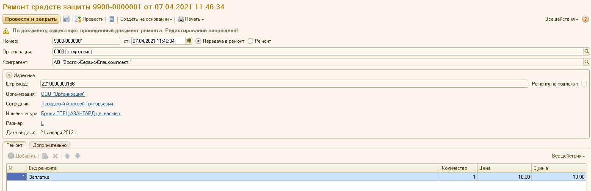
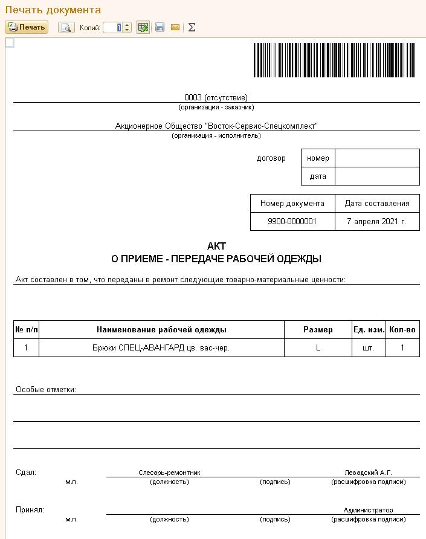
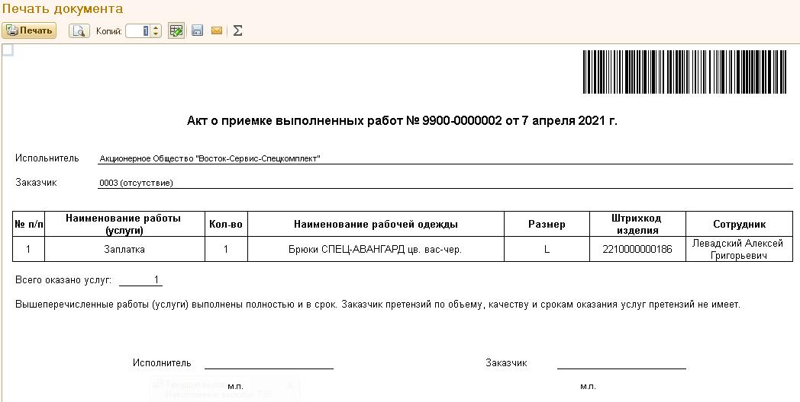
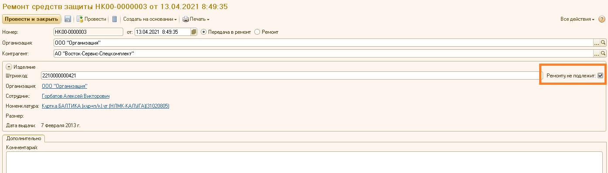

Ремонт средств защиты
Документ может фиксировать в системе 3 вида операций:
• «Передача в ремонт» - фиксируется прием в ремонт изделия от сотрудника;
• «Возврат из ремонта» - фиксируется возврат изделия из ремонта;
• «Ремонт» - фиксируется факт ремонта изделия, которое было выполнено на стороне без участия сотрудника заказчика.
При передаче в ремонт создается новый документ «Ремонт средств защиты» с видом операции «Передача в ремонт». Штрихкод изделия можно заполнить вручную или прочитать сканером. Затем производится ручное заполнение табличной части документа теми видами ремонта, которые предполагается производить. Цены и суммы заполняются автоматически согласно данным, введенным документами «Ценовое соглашение по ремонту». Допускается редактирование только вида ремонта и количества.
Если на основании документа введен другой документ ремонта, форма этого документа блокируется и на нее выводится соответствующее сообщение.

Рисунок 1
После проведения документа можно сформировать печатную форму «Акт приема - передачи».
Рисунок 2
На печатной форме отображается штрихкод документа для быстрого поиска его в списке.

Рисунок 3
На основании документа ремонта с видом операции «Передача в ремонт» вводится документ ремонта с видом операции «Возврат из ремонта». Документ не редактируется. Из него формируется печатная форма «Акт выполненных работ».

Рисунок 5
Из документов ремонта с видом операции «Ремонт» допускается формирование печатных форм «Акт приема - передачи» и «Акт выполненных работ». Документы ремонта с видом операции «Ремонт» не блокируются.
В случае, когда отремонтировать изделие невозможно, следует установить флажок «Ремонту не подлежит». При этом, табличная часть документа очищается и становится невидимой.

Рисунок 6
В форме списка такие документы подкрашены.
Рисунок 7